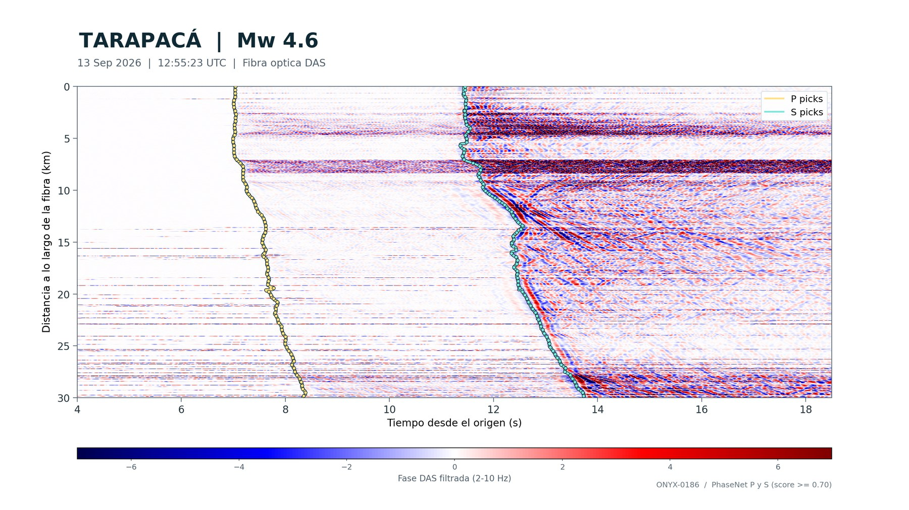
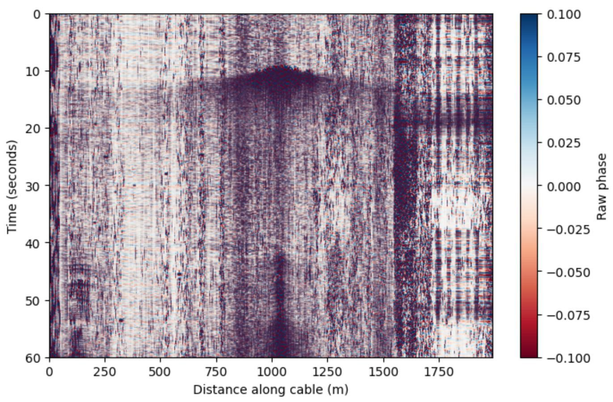
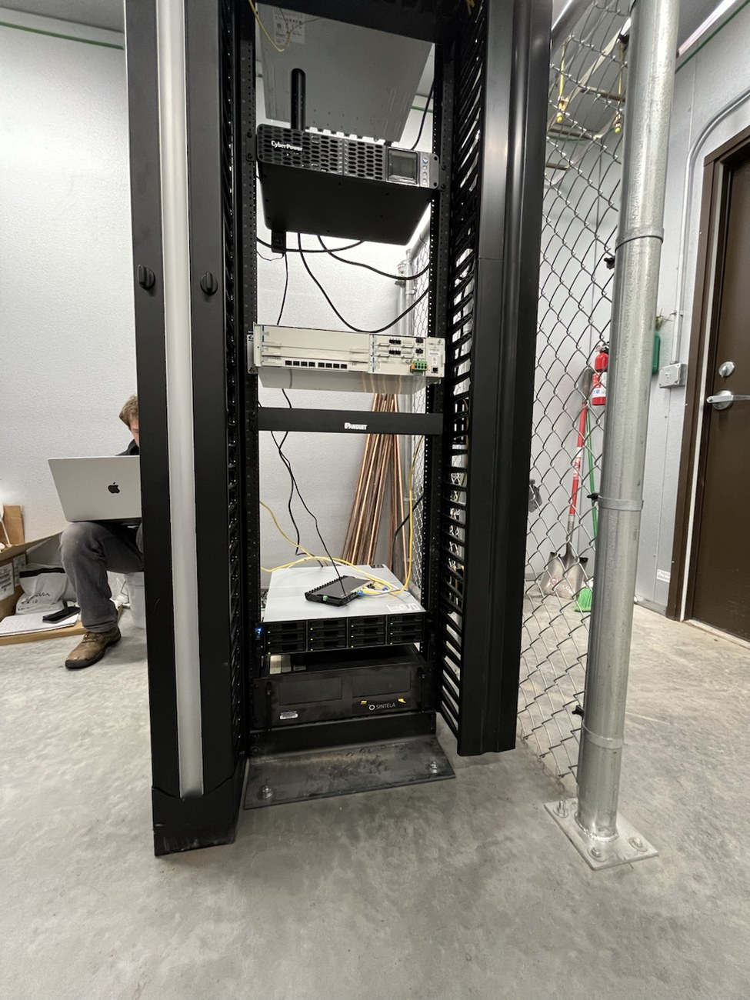

Toda la fibra es el sensor.
Monitoreo microsísmico y geotécnico con fibra óptica, metro a metro.
Con detección acústica distribuida (DAS), una fibra en sondajes, galerías o ductos se convierte en miles de sensores de vibración. Diseñamos dónde va según la geología, operamos el interrogador y analizamos la señal. Ya registramos datos en más de 60 km de mineroducto y en un volcán activo. También trabajamos en energía, agua y transporte.
Mide en todo el largo de la fibra, no solo en puntos
Un sensor virtual cada pocos metros: cientos o miles por cable
Hasta 130 km por interrogador, en dos fibras de 65 km
Solo fibra pasiva; el interrogador queda en un extremo
Verónica Gaete Elgueta
José Estay Herrera
De la luz a la decisión
No fabricamos equipos ni estamos atados a un fabricante: elegimos el interrogador que mejor calza con cada proyecto. Lo nuestro es saber dónde instalar la fibra y qué hacer con la señal.
Elegimos dónde va la fibra según la geología del sitio y configuramos el interrogador. Cuando el terreno vibra, la fibra se deforma y cambia la luz que vuelve: un registro cada pocos metros, a lo largo de decenas de kilómetros.
Un cable genera hasta varios terabytes al día. Filtramos el ruido y redes neuronales detectan los eventos sin revisión manual, como la llegada de las ondas P y S de un sismo, con modelos existentes como PhaseNet. Entrenar modelos propios para cada sitio es el paso siguiente.
Con el ruido sísmico ambiental, sin explosivos ni fuentes artificiales, obtenemos imágenes del subsuelo por tomografía, confiables hasta 500 m de profundidad.
Alertas automáticas con el kilómetro exacto del evento y reportes para el equipo de operación.
Qué gana su operación · resultados de un modelo hipotético
Para un sismo Mw −0,5 en el nivel nuevo, al sumar tres sondajes con fibra a la red de la mina.
Con fibra de bajo ruido (1 pε/√Hz), la red detecta sismos más chicos.
Del beneficio del piloto se obtiene con tres sondajes de exploración que ya existen.
En los mismos sondajes. La fibra suma cobertura continua, no lleva electrónica en el fondo y mide deformación lenta.
Todas las cifras vienen de nuestro caso de estudio: un modelo conceptual de una mina hipotética, construido con datos publicados. Ver el caso de estudio →
La fibra mide la deformación a lo largo de su propio eje. Por eso diseñamos el trazado según la geología de cada sitio: ese diseño es parte del servicio.
Lo que ya hemos medido en terreno
Antes de ofrecer servicios comerciales, probamos la detección distribuida en terreno: en un mineroducto en operación, en un volcán activo y, junto a la University of Washington, en Yellowstone:

Mineroducto industrial · más de 60 km
La fibra de un mineroducto en operación registró un sismo Mw 4.6; las ondas P y S se detectaron automáticamente con PhaseNet.
Ver detalle →
Volcán Cordón Caulle · hasta 500 m
Unos 2 km de fibra enterrada en un volcán activo: perfil del subsuelo con ruido ambiental, en procesamiento, y registro de emanaciones de gases.
Ver detalle →
Yellowstone, EE.UU.
Despliegue DAS en un ambiente volcánico e hidrotermal, junto a la University of Washington (abril 2026).
Ver detalle →Aplicaciones: dónde la fibra se convierte en sensor
Buscamos empresas mineras, de energía, sanitarias y de transporte, junto a sus gerencias de innovación, para desplegar pruebas de concepto de detección distribuida que resuelvan sus necesidades de vigilancia, monitoreo y alerta temprana, adaptándonos a la geometría y geología de cada sitio:


Con quiénes trabajamos
Nuestra propuesta técnica se apoya en proyectos de investigación internacionales, una gran minera del norte de Chile, la Universidad de Chile y una consultora geológica:
- Proyecto CHILCO (NSF-FRES)
- Applied Environmental Intelligence (AEI)
- Gran minería del cobre · Norte de Chile
- DGF · Universidad de Chile
- Xterrae Geología
Preguntas frecuentes
¿Ustedes venden el interrogador?
No vendemos equipos. Para cada piloto arrendamos o compramos el interrogador a fabricantes internacionales, y su costo va incluido en la propuesta. No estamos atados a ningún fabricante: elegimos el equipo que mejor calza con el proyecto.
¿Hay que instalar fibra nueva?
No siempre. Si hay fibra monomodo con un hilo libre, por ejemplo en un ducto o una galería, se puede partir con ella. Si no, diseñamos el trazado según la geología, y los sondajes de exploración existentes pueden servir.
¿Dónde quedan los datos y de quién son?
Los datos crudos y los resultados son suyos. Se guardan en discos o en la nube, según lo que acordemos con usted. Un interrogador genera de cientos de gigabytes a varios terabytes al día, así que el almacenamiento se dimensiona como parte del diseño.
¿En qué formato entregan los resultados?
Los registros crudos quedan en HDF5, el formato habitual de los equipos DAS. Los resultados (catálogo de eventos, ubicaciones, imágenes del subsuelo e informe) se entregan en formatos abiertos que se pueden cargar en otros programas.
¿Cuánto dura y cuánto cuesta un piloto?
Al menos uno a dos meses de registro. El costo depende del alcance, de la fibra disponible y del equipo; lo definimos en la propuesta, después de la primera reunión técnica.
Co-diseñe un piloto de validación con nosotros.
¿Necesita vigilar una faena, un ducto, una línea eléctrica, una red de agua o una zona de riesgo geológico? Nuestro equipo de geólogos y geofísicos evalúa con usted si DAS es la herramienta adecuada y cómo sería un piloto.
Cómo trabajamos un piloto
- Conversamos su caso: una reunión técnica para entender el problema y la operación.
- Revisamos fibra y sitio: vemos la fibra disponible, el acceso y la geología del lugar.
- Diseñamos el piloto: proponemos alcance, duración y resultados medibles antes de desplegar, y le enviamos una propuesta con el presupuesto.
- Medimos: al menos uno a dos meses de registro continuo. Ese tiempo permite medir el ruido real de la fibra, entrenar los modelos con los eventos del sitio y obtener imágenes del subsuelo con el ruido ambiental.
- Entregamos: lo que su operación necesite, dentro de lo que la fibra puede medir. Por ejemplo: el nivel de ruido de la fibra instalada, un catálogo de eventos detectados y clasificados, la ubicación de sismos, imágenes del subsuelo y un informe con nuestra recomendación sobre si conviene escalar.